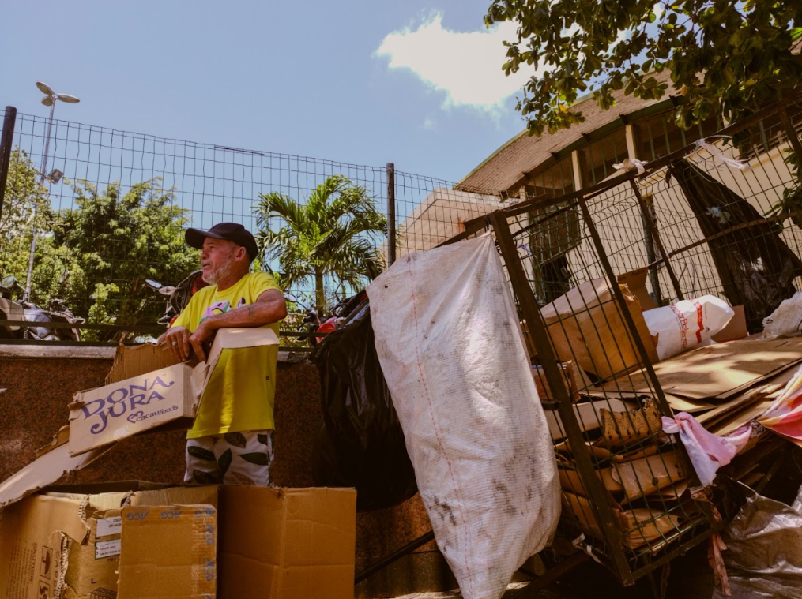
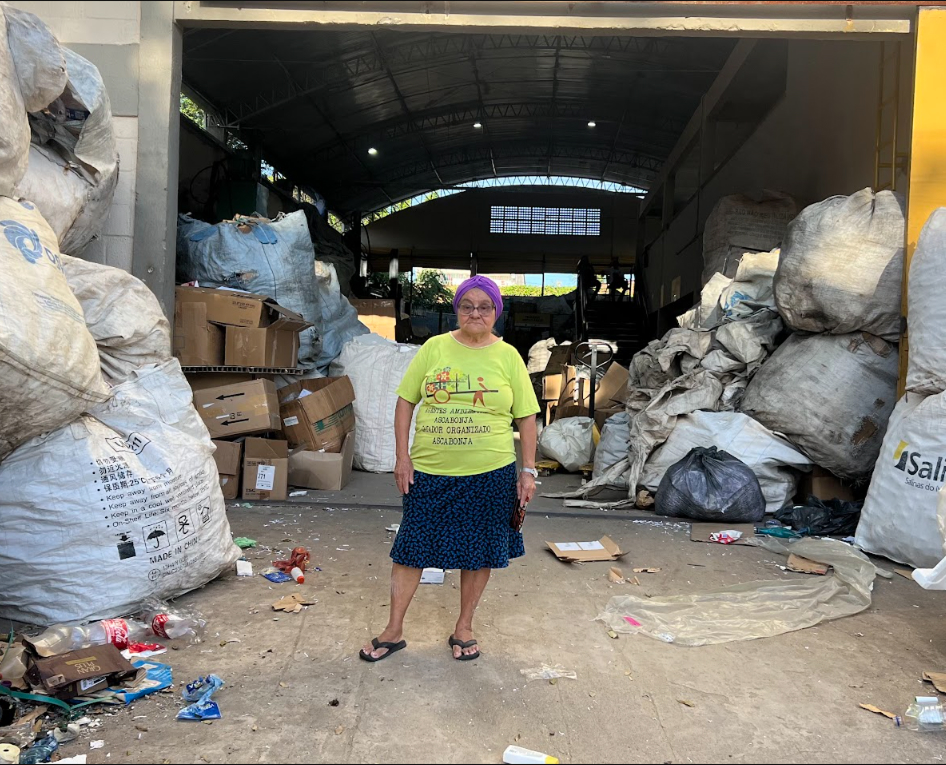
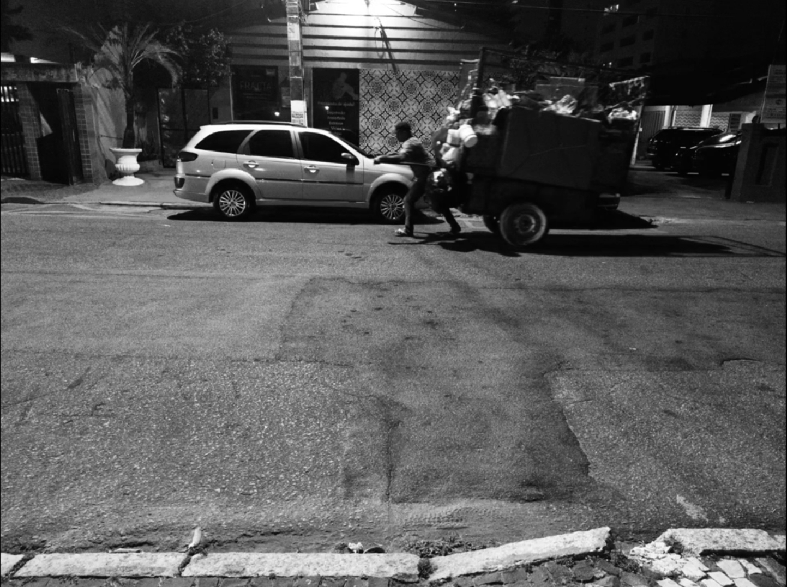
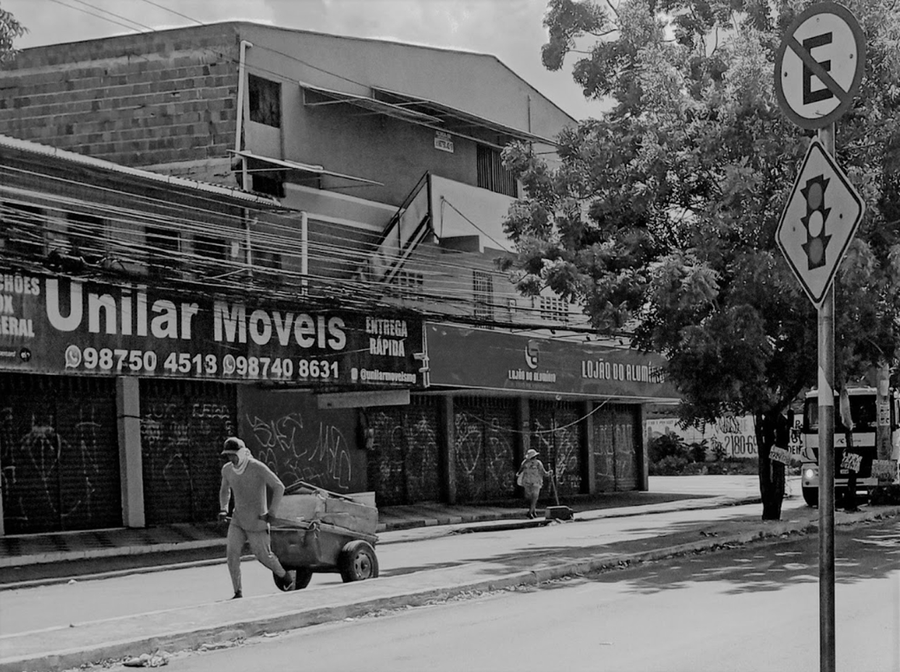
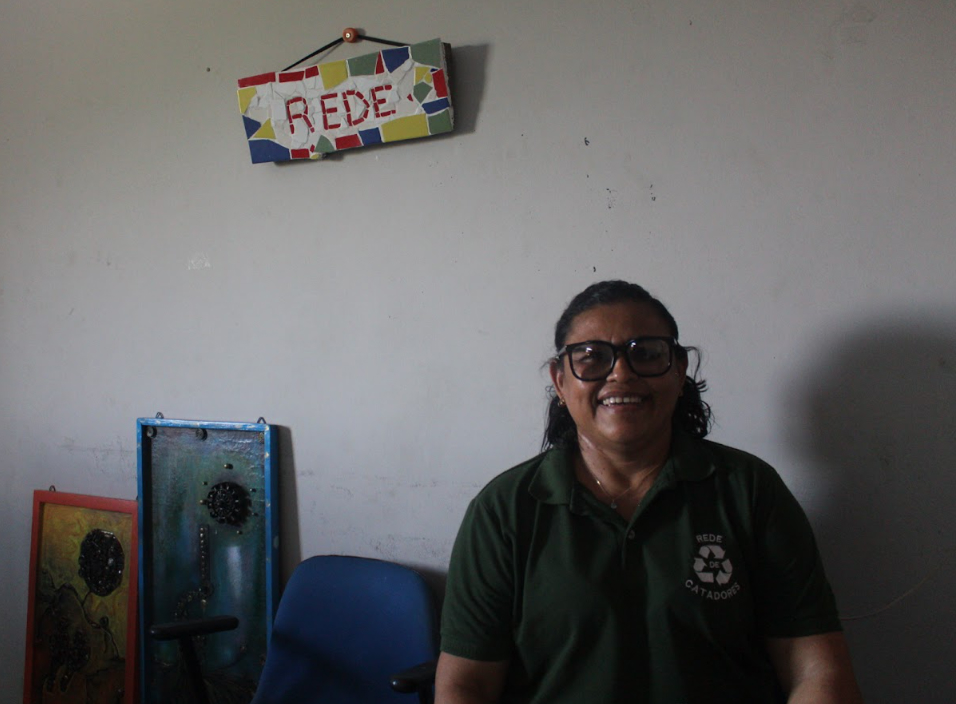
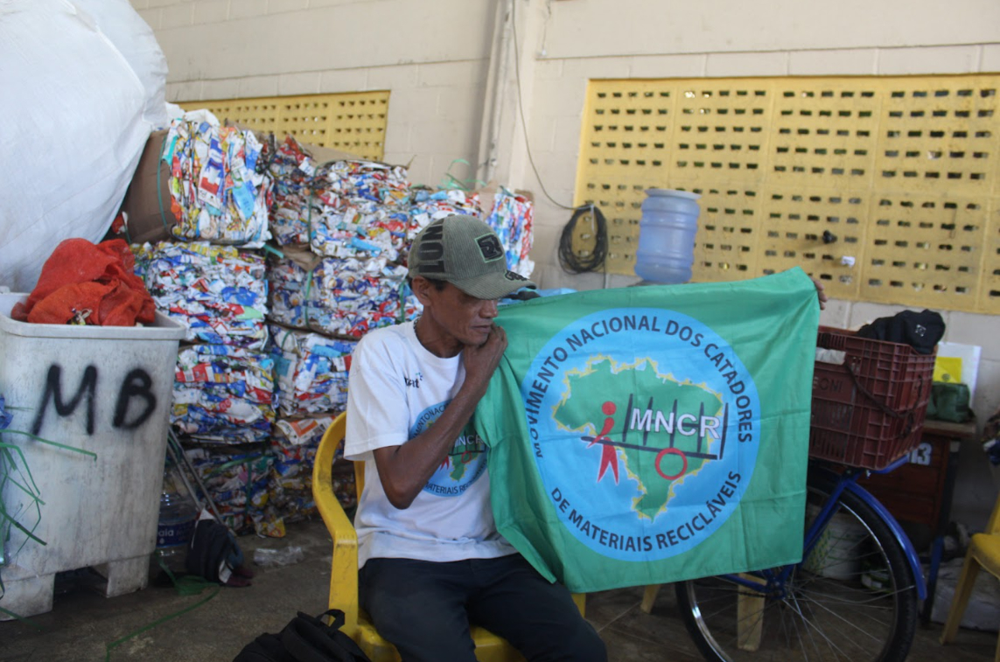
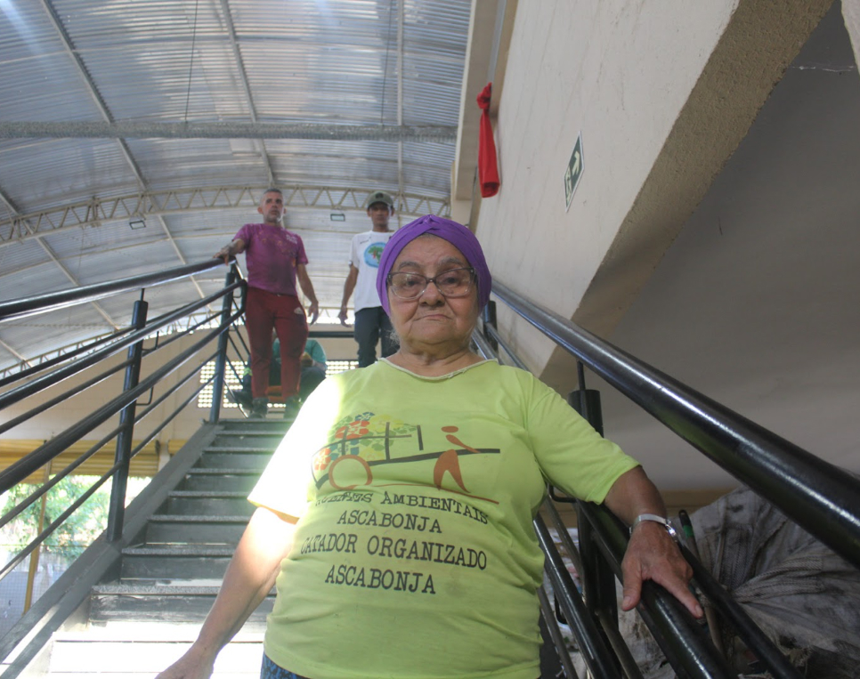
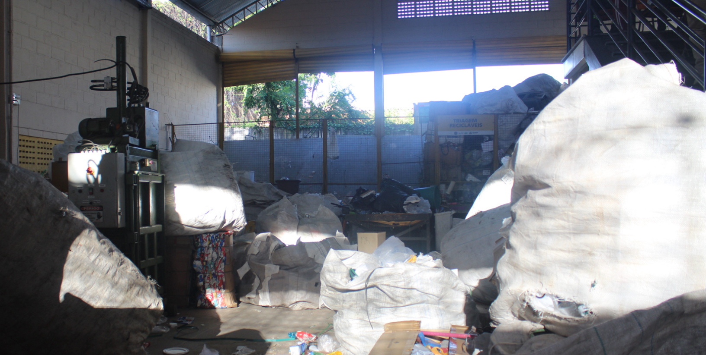
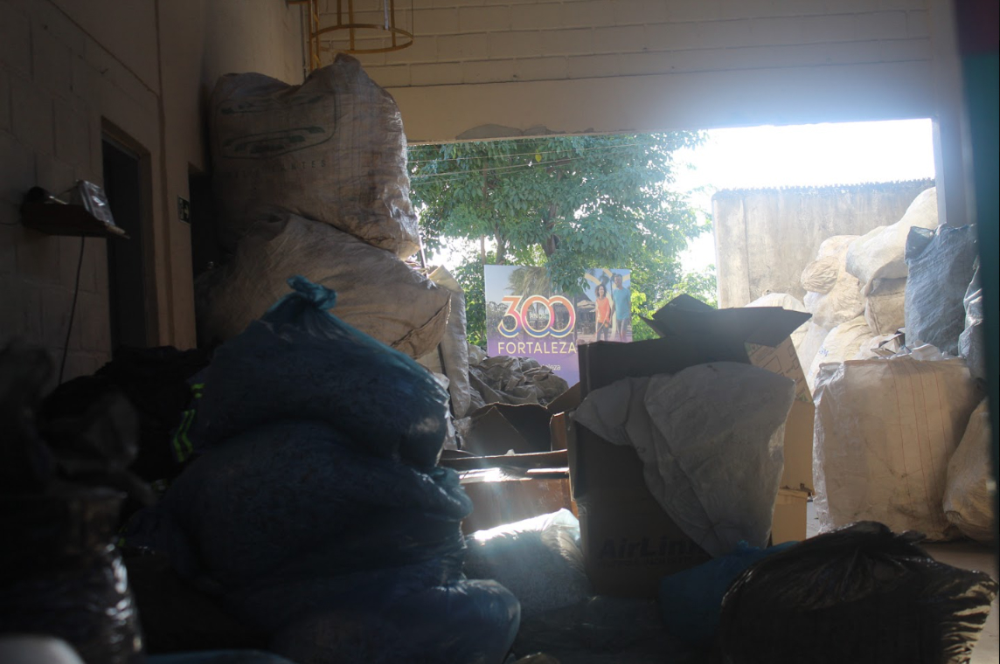

Peso médio carregado por viagem no carrinho, empurrado manualmente em ruas sem infraestrutura.
CATADORES DO BRASIL
Conexões que
transformam
realidades.
Todos os dias, antes mesmo de a cidade despertar, milhares de catadores de materiais recicláveis já estão nas ruas. Empurrando carrinhos e percorrendo longas distâncias, eles desempenham um papel essencial para a reciclagem no Brasil, embora sua atuação ainda seja pouco reconhecida pela sociedade.

UM PROJETO DE
EXTENSÃO DA UFC
EXTENSÃO DA UFC

800 milCATADORES NO PAÍS
90%SEM PROTEÇÃO SOCIAL
R$ 15 biEM VALOR GERADO
ROLE PARA DESCOBRIR
QUEM SÃO OS CATADORES?
Invisíveis
na cidade...
Os catadores de materiais recicláveis desempenham uma função indispensável para a sociedade. São eles os responsáveis por coletar, separar e encaminhar para a reciclagem grande parte dos resíduos que seriam descartados em aterros sanitários ou deixados nas ruas. Seu trabalho contribui diretamente para a preservação do meio ambiente, para a redução da poluição e para o fortalecimento da economia circular.
...essenciais ao
planeta.
No Brasil, milhares de famílias encontram na catação sua principal fonte de renda. Apesar da relevância de sua atuação, os catadores ainda enfrentam desafios como a baixa remuneração, a informalidade e a falta de reconhecimento social. Reconhecer sua importância significa compreender que a sustentabilidade das cidades depende também do trabalho dessas pessoas.

CATADORA NO GALPÃO DA REDE DE CATADORES“A gente precisa ser reconhecido não só como catador, mas como agente ambiental”
ANTÔNIA, 65 ANOS - FORTALEZA, CE
A ROTINA DOS CATADORES
Um amanhecer
antes da luz.
Enquanto grande parte da cidade ainda dorme, muitos catadores já iniciaram sua jornada. Equipados apenas com seus carrinhos e a própria força física, eles percorrem longas distâncias em busca de materiais recicláveis que possam ser vendidos posteriormente.
Ao longo do dia, enfrentam o calor, as condições climáticas adversas, o trânsito e os riscos associados ao manuseio inadequado de resíduos. Mesmo diante dessas dificuldades, seguem desempenhando um papel fundamental para a limpeza urbana e para a preservação ambiental.

COLETA NA MADRUGADA
COLETA DURANTE O DIAIMPACTO DO TRABALHO
O peso de um
trabalho invisível.
Os dados apresentados demonstram que a reciclagem brasileira depende diretamente do esforço diário de milhares de trabalhadores que permanecem invisíveis para grande parte da sociedade.
Valor que o Brasil perde anualmente por deixar de reciclar resíduos que poderiam ser reaproveitados, segundo estudo do IPEA.
Aumento da renda observado em uma associação de catadores após investimentos em infraestrutura e fortalecimento da organização coletiva (RESOL, Paraná).
Toneladas de materiais recicláveis recuperados pela coleta seletiva no Brasil em um ano, segundo o Sistema Nacional de Informações sobre Saneamento (SNIS).
Do material reciclável que chega às indústrias passou pelas mãos de catadores.
HISTÓRIAS E VOZES
Rostos por trás
dos carrinhos.
Quando falamos sobre reciclagem, é comum pensar apenas nos resíduos. No entanto, por trás de cada tonelada reciclada existem histórias de vida marcadas pelo esforço, pela superação e pela busca diária por dignidade. Clique para conhecer algumas dessas histórias.

PERFILLeina Mara Duarte, 47 anos
Presidente da Rede Estadual de Catadores. Mara dedica sua vida à organização e representação da categoria. Ela afirma que sempre acreditou no trabalho coletivo e que sua motivação é lutar para que todos os catadores tenham melhores condições de vida, e não apenas benefícios individuais.
Sua atuação é marcada pelo compromisso com o fortalecimento do associativismo e pela busca de justiça social para todos os trabalhadores da reciclagem.
“Se eu estou bem e o meu amigo, que faz o mesmo trabalho que eu, não está, tem alguma coisa errada.”
“Saí do lado do atravessador e fui para o lado da luta.”

PERFILCícero, 53 anos
Além de atuar como catador, Cícero se considera um educador ambiental e um defensor da sustentabilidade.
Ele é pai e procura transmitir aos filhos a importância do cuidado com o meio ambiente e da responsabilidade social. Acredita que a educação é um dos principais instrumentos para transformar a realidade da população e ampliar o reconhecimento dos catadores.
“A gente não quer só ser reconhecido. A gente quer ser incluído.”
“Nós somos importantes para a sociedade.”

PERFILAntônia Mendes de Souza, 65 anos
Além de atuar como catadora, Antônia é mãe, avó e responsável pela criação dos netos. Trabalha com artesanato e dedica parte do seu tempo ao ensino dessa atividade para um grupo de aproximadamente trinta mães atípicas.
“Nossa categoria não é lixeiro, e sim catadora de material reciclável.”
“A gente precisa ser reconhecido não só como catador, mas como agente ambiental.”
ENTENDA MAIS
O que está por trás da reciclagem
Perguntas frequentes sobre a realidade dos catadores, o valor do seu trabalho e como cada um de nós pode fazer diferença.
Clique nos tópicos abaixo para saber mais!
Por que catadores ganham tão pouco se a reciclagem vale bilhões?
A cadeia da reciclagem é longa: entre o catador e a indústria existem vários intermediários (sucateiros ou atravessadores). Por estar no início da cadeia e sem poder de barganha, o catador fica com a menor fatia de um mercado que movimenta bilhões.
Estudo do IPEA estima que eliminar esses intermediários pode elevar a renda dos catadores em até 25%, aproximando a média mensal de R$ 930 por catador.
Fonte: IPEA / Agência Brasil, 2022
O que muda quando um catador entra em uma cooperativa?
Com a organização coletiva, os catadores ganham poder de negociação, acesso a equipamentos e triagem, e passam a vender direto para a indústria — sem intermediários. O resultado é mais renda, mais segurança e maior reconhecimento.
Cooperativas e associações que participaram do projeto Pró-Catadores, do Sebrae, tiveram faturamento médio 21% maior.
Como separar o lixo em casa afeta a renda dos catadores?
Material reciclável limpo e bem separado tem maior valor de mercado. Quando vem misturado ou contaminado com restos orgânicos, ele perde valor — ou é descartado —, reduzindo a renda dos catadores e tornando o trabalho mais insalubre. Um simples enxágue e a separação correta em casa aumentam o aproveitamento e a remuneração de quem coleta.
Qual é o impacto ambiental desse trabalho?
Ao desviar materiais dos aterros e devolvê-los à indústria, os catadores reduzem a extração de matéria-prima virgem e as emissões de gases de efeito estufa. Segundo o Anuário da Reciclagem, as organizações de catadores pesquisadas coletaram 421,7 mil toneladas de materiais, associadas a um potencial de redução de 282,4 mil toneladas de CO₂ — concentradas sobretudo em metais e plásticos.
Fonte: Anuário da Reciclagem, 2022

TRIAGEM DE MATERIAL
GALPÃO DE COOPERATIVA5 Mi
De toneladas de recicláveis recuperadas por ano.
Sem os catadores, o colapso dos aterros sanitários brasileiros seria muito mais rápido e a população acabaria pagando por isso.
O QUE VOCÊ PODE FAZER
Cada gesto importa
Ações simples que impactam diretamente a renda e o trabalho de quem coleta.
Separe o lixo seco do orgânico
Descarte o vidro quebrado com segurança
Achate o papelão
Apoie cooperativas locais
PROJETO CONEXÃO CATADORES
O trabalho invisível merece ser visto.
Desde 2024, o projeto Conexão Catadores aproxima o meio acadêmico da realidade dos catadores, gerando pesquisa, visibilidade e ação concreta. Porque o que não é visto, não é transformado.
Ao longo deste projeto, buscamos dar visibilidade ao trabalho dos catadores de materiais recicláveis e destacar sua importância para a sustentabilidade das cidades. Esperamos que esta iniciativa incentive uma nova forma de enxergar esses profissionais: como agentes ambientais essenciais para a construção de um futuro mais justo e sustentável.
UM PROJETO DE EXTENSÃO DA UFC